NOGUE
04 / 04Editorial design · 2025
- Editorial Layout
- Creative Concept
- Photography
NOGUE is a biannual satirical fashion magazine that critiques consumerism, fast fashion, and performative luxury through irony, parody, and bold visual storytelling. NOGUE mimics high-fashion aesthetics only to subvert them with chaotic designs, awkward poses, and irreverent content. Created collaboratively, the magazine blends theatrical photography, hand-drawn illustrations, and playful typography to expose the absurdity of the fashion world while celebrating imperfection, humor, and rebellion.
Within the group project, my main responsibility was the design and layout in InDesign. Additionally, I contributed to photography and creative decision-making.

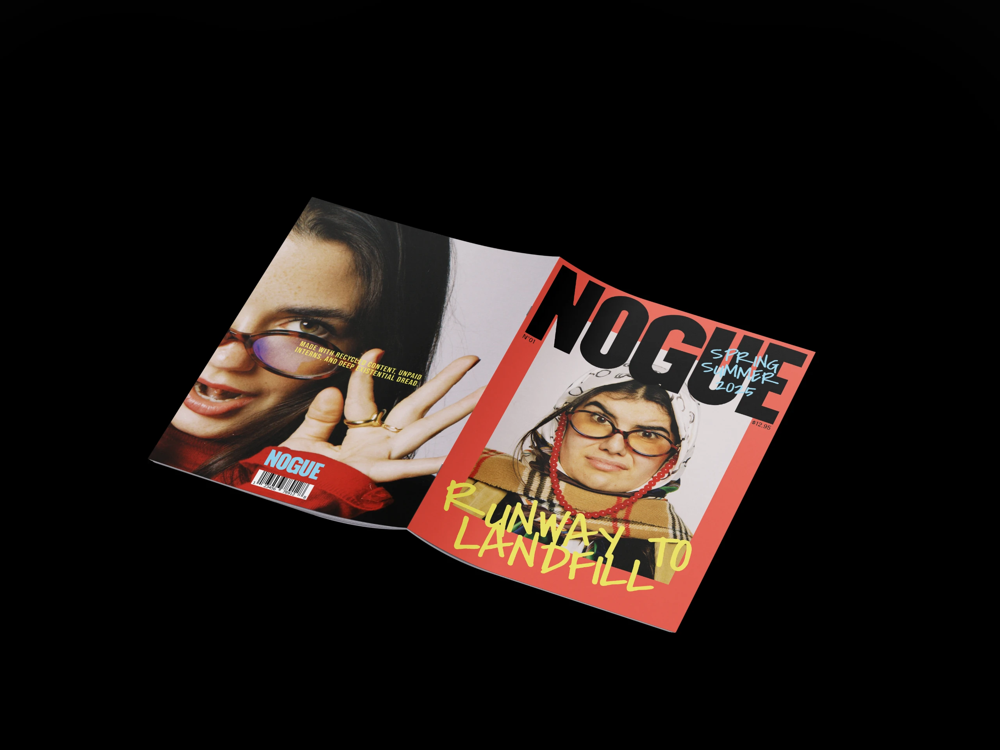

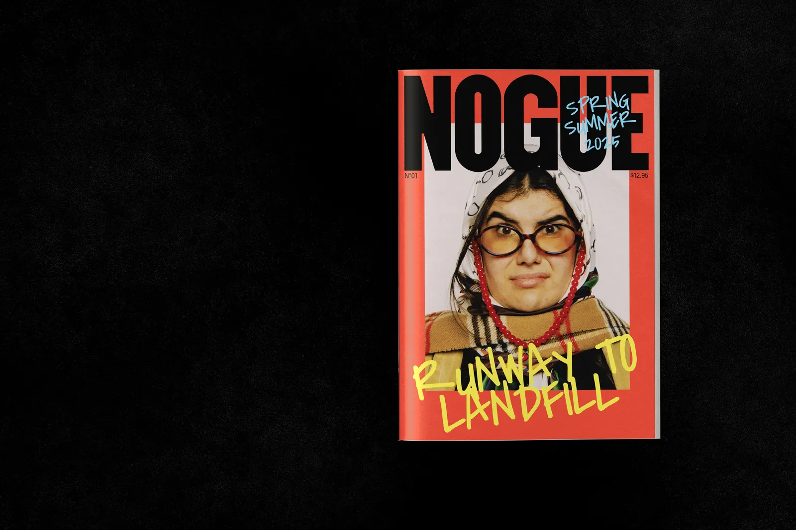

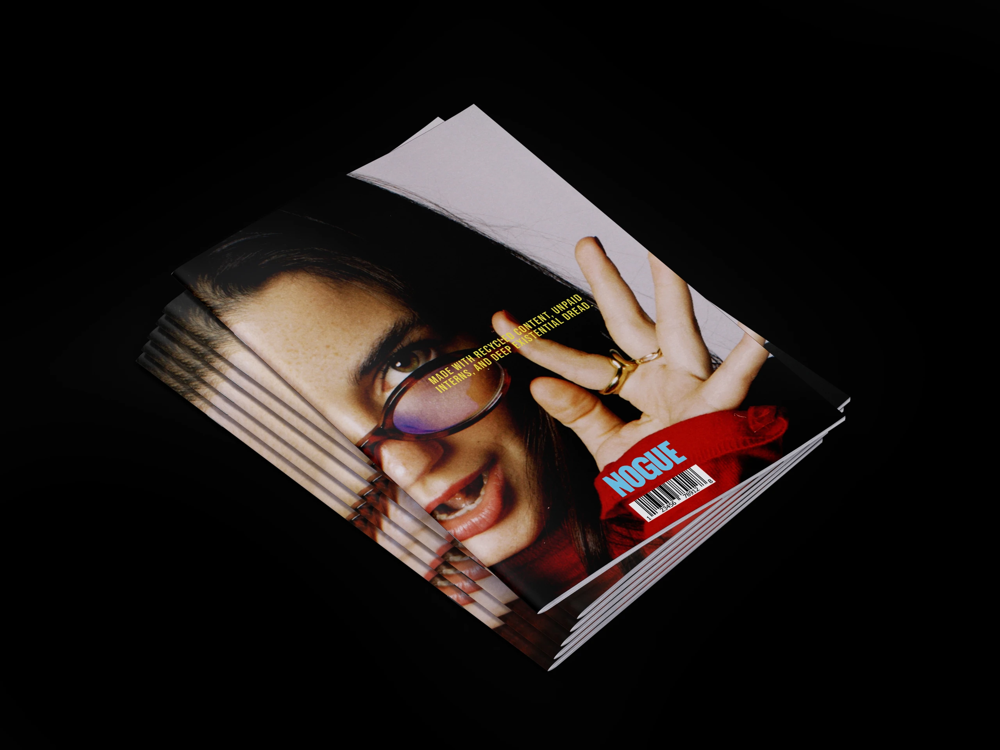

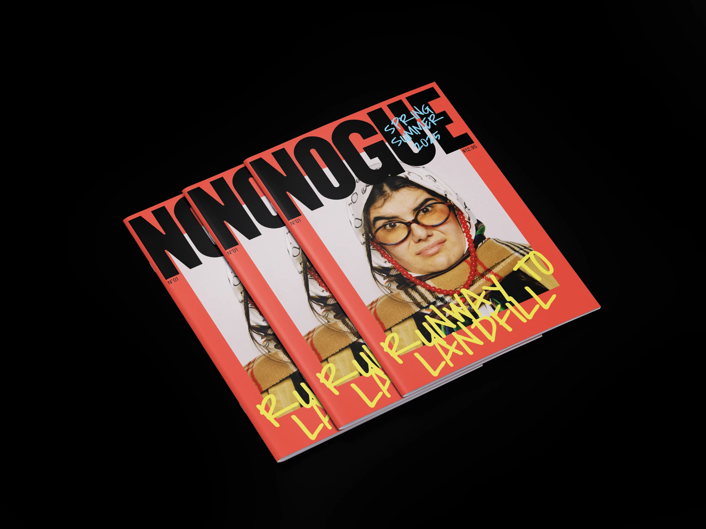

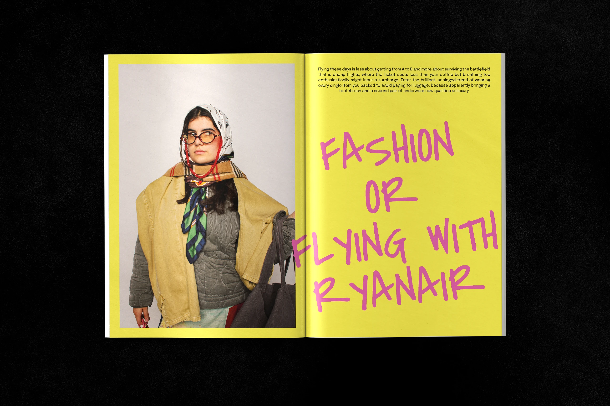

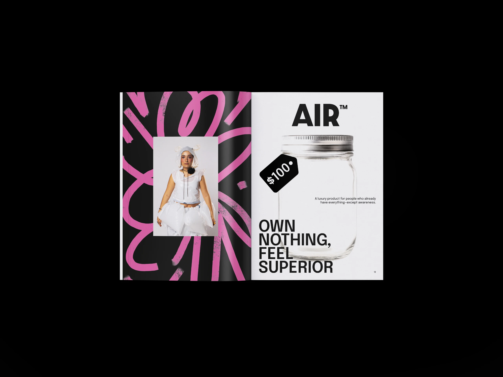

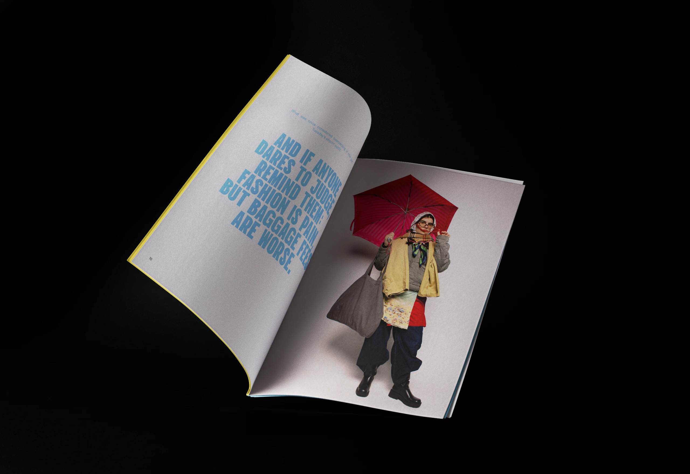

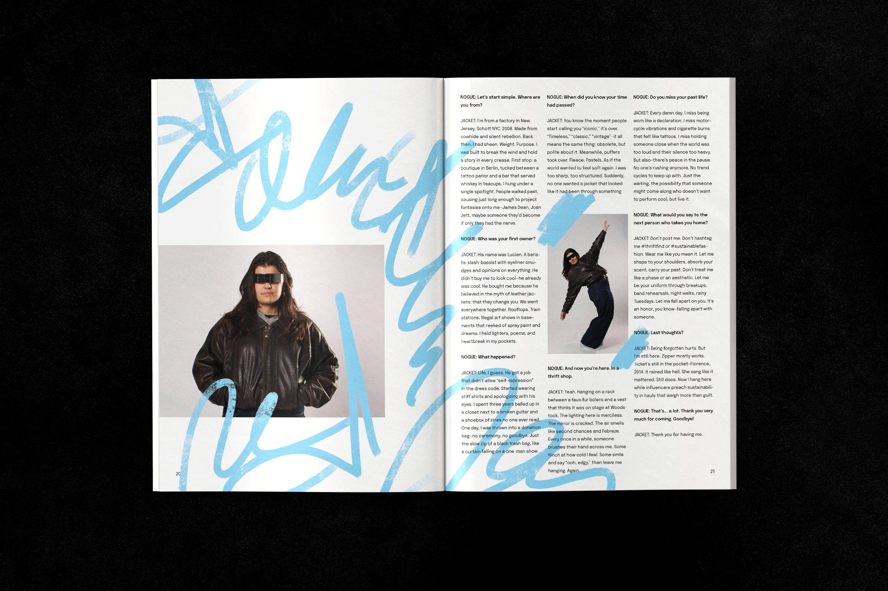

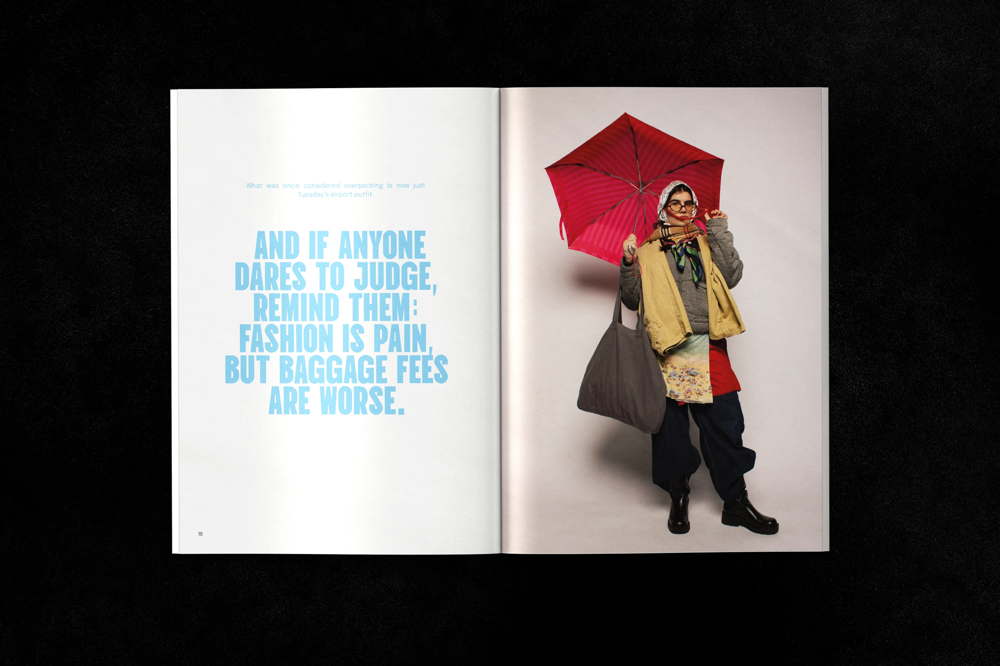

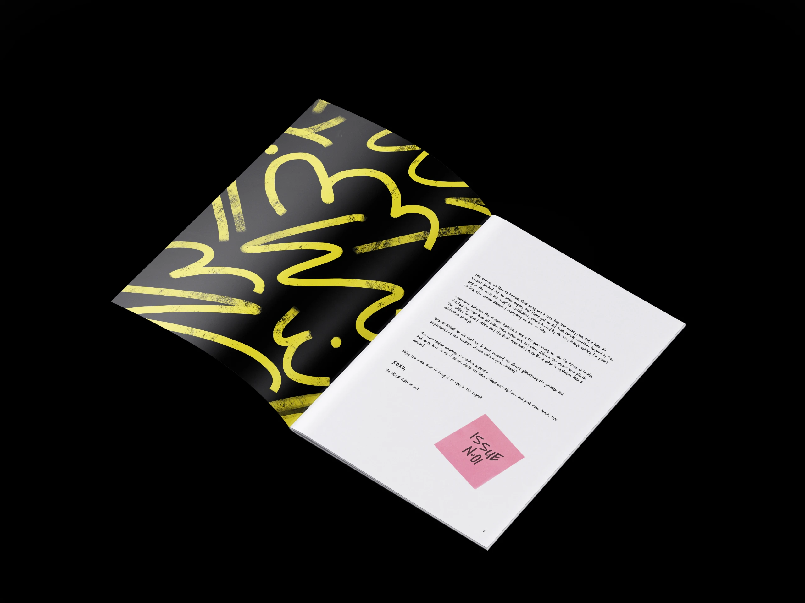

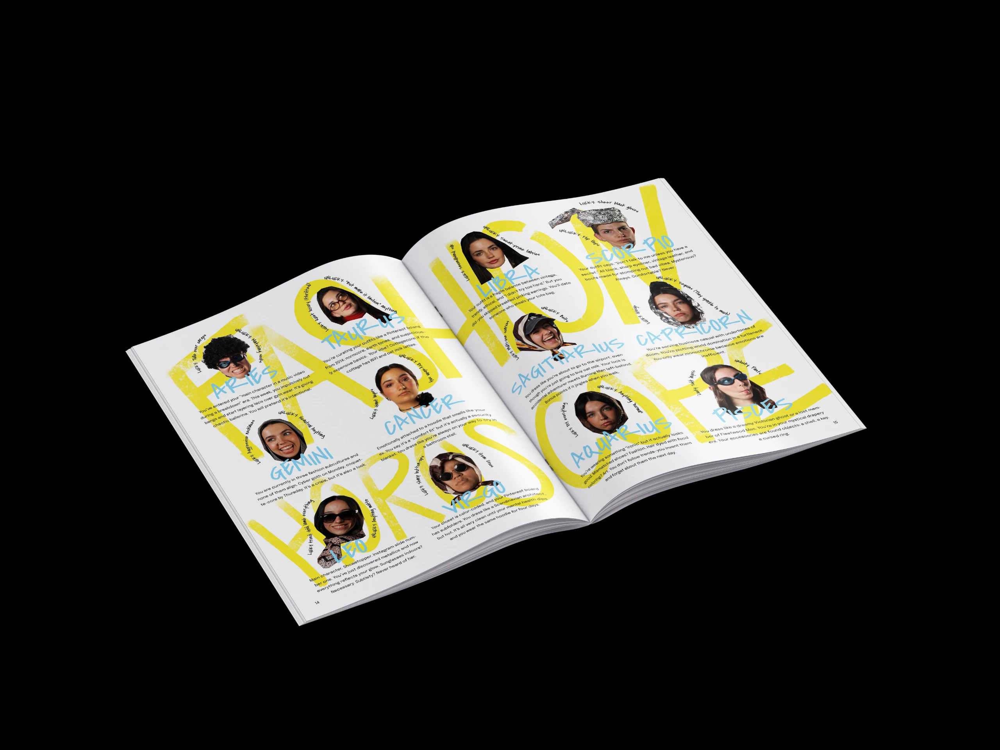

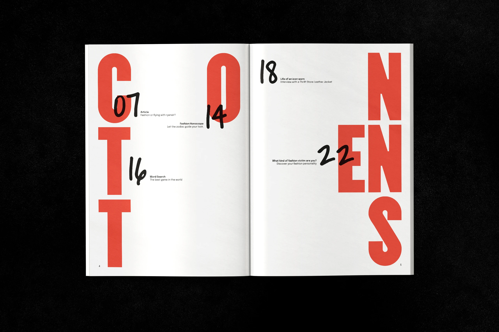

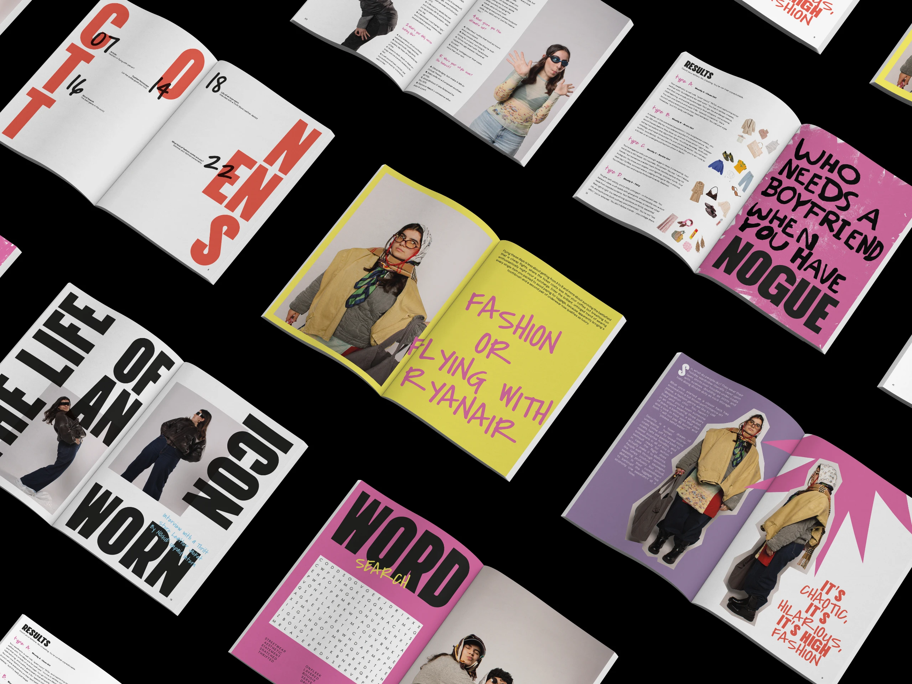